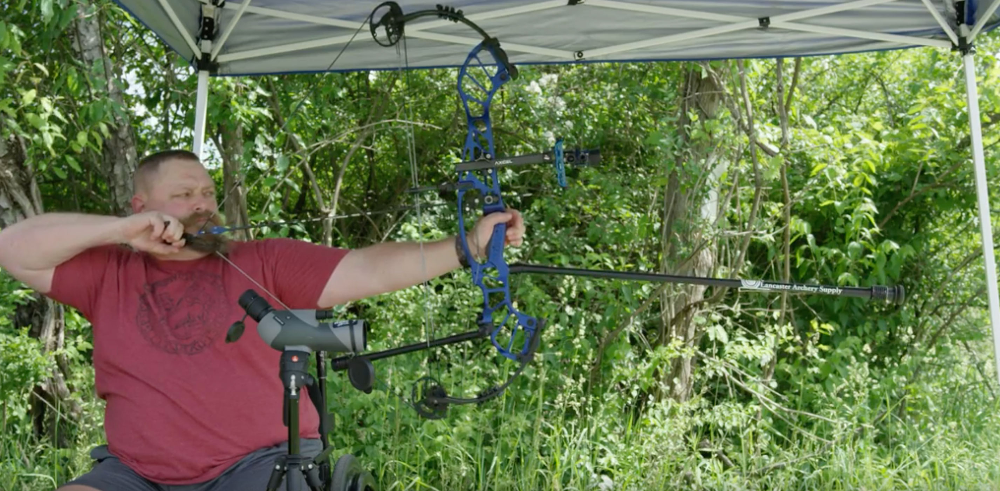

How does the Pittsburgh area hold up to other areas in ADA compliance?

Season 1 of "From the Source" set out to hear about life in Pittsburgh during the coronavirus pandemic. We heard from business owners, students, parents and others. Then, we shifted attention to the crisis of racism and police brutality against Black people in America — a civil rights movement happening during a health pandemic. Now, we're ending season 1 and would like to hear from you as we plan for season 2. What do you want us to cover? Who should we feature? What stories should we report? Please take this survey today!